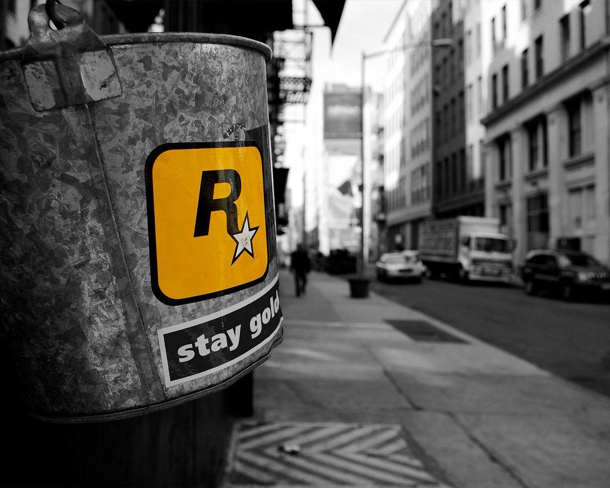

|  |
HistoriaLa etiqueta Rockstar Games fue fundada en diciembre de 1998 por Sam Houser, Dan Houser, Gary Foreman, Terry Donovan, y Jamie King.Donovan dejó la compañía en enero de 2007, después de una licencia de cuatro meses de ausencia. Fue reemplazado por el ex Capcom, Gary Dale.El nombre de la empresa fue decidido en un parque de atracciones en referencia a la pasión de Sam Houser por la música Rock and Roll de los años 70 y 80. La sede principal de Rockstar Games se encuentra en Broadway en el barrio NoHo de la ciudad de Nueva York, parte de las oficinas de Take-Two Interactive. Es el hogar de la comercialización, relaciones públicas y departamentos de desarrollo de productos. A partir de febrero de 2014, los títulos de Rockstar Games han vendido más de 250 millones de copias,siendo la mayor franquicia la serie Grand Theft Auto que es el único envíos de al menos 250 millones de dólares a partir de noviembre de 2016. Grand Theft Auto V enviado el mayor número de unidades (por lo menos 75 millones de copias) dentro de la serie historia y convertirse en uno de los videojuegos con más ventas de todos los tiempos. En marzo de 2014, Rockstar Games recibió el premio BAFTA de la Academia de becas en los Premios BAFTA de Videojuegos. |